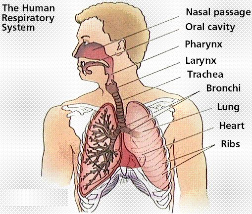

L'appareil respiratoire
Les organes des voies respiratoires superieures

Le nez a differentes fonctions :
Le pharynx est un conduit faisant communiquer la bouche et l'œsophage d'une part, les fosses nasales et le larynx d'autre part.
C'est donc le carrefour des voies aeriennes et des voies digestives qui se croisent e ce niveau.
3 parties :
Le larynx est l'organe essentiel de la phonation, c'est e dire de la parole.
Le larynx presente :
L'epiglotte
L'epiglotte est situee au-dessus du larynx, elle separe le pharynx du larynx pour eviter les fausses routes.
La trachee est un cartilage cylindrique qui fait suite au larynx et donne naissance aux bronches, elle est recouverte d'une muqueuse epitheliale possedant des cils permettant de filtrer l'air.
Composition de l'arbre bronchique


Les poumons sont separes par le mediastin dans la cage thoracique.
Le sommet du poumon est l'apex.
3 faces :
| Video des poumons |
| e Docteur Richard Martzolff Encyclopedie medicale Vulgaris |
L'alveole est un sac qui se gonfle et se degonfle.
Autour, un reseau de capillaire permet des echanges gazeux.
A l'interieur, un liquide permet qu'elle ne se collabe pas, c'est le surfactant.

La plevre est une couche membraneuse qui recouvre les poumons.
Elle est constituee de 2 feuillets :
Entre ces deux feuillets, une cavite virtuelle permet le glissement des feuillets.
Voir aussi :
|
Accueil
| Sciences infirmieres |
Soins et techniques
|
Pharmacologie et Therapeutiques
|
Examens
biologiques |
Examens medicaux
| Version imprimable e Samir ISP tous droits reserves design : xgraphik.com modifie par M. Pitte |
 haut
de page
haut
de page